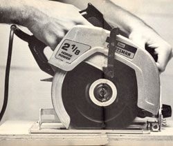
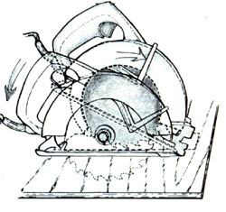
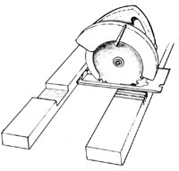
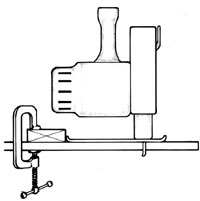

Issue # 103 - January/February 1987
Buying a portable power tool shouldn't be a shot in the dark.
A portable electric circular saw can't do everything, but it comes close. The "side-winder" has become a mainstay in the home shop and the building trades alike. Its use is so common in construction that many call it a contractor's saw, though among do-it-yourselfers, it's still a "skilsaw," after the popular brand-name tool.
This workhorse is flexible enough to be one of the first choices a first-time buyer should consider. Far from being limited to cutting a straight line, the circular saw can slice out notches and pockets, make holes in the center of sheathing, cut bevels in rough and trim work, gouge recesses or channels in lumber, and custom-fit framing members in place on-site. When fitted with special blades, it can also trim out curves and circles, gnaw through brick and block, and rip into lightweight sheet metal. Mounted blade-up beneath a platform, it even makes a fair table saw in a pinch.
Identifying your garden-variety circular saw is a cinch. Its most prominent feature is the large blade mounted to one side of the tool, shrouded at its circumference with a protective guard. The cylindrical motor extends from the opposite side, positioned with its shaft parallel to the blade's arbor, or axle. A handle and built-in trigger switch sit midway between the two, cocked slightly toward the rear to provide a natural grip. The whole shebang is set upon a metal plate, or shoe, that pivots to one side to allow the blade to cut at an angle.
Now for the exception: Professionals lean more toward worm-drive circular saws, which differ from their sidewinder cousins in that they have right-angle gear-reduction drives, which offer greater durability and torque than conventional spur-gear drives. This arrangement puts the motor behind the blade and parallel to it.
Worm-drive saws are heavy (about 15 pounds or so versus the sidewinder's 10 or 11) and require specific cutting techniques, but they offer a safe and unimpeded view of the blade and the work.
Considering the broad range in price and construction, it would be difficult to pinpoint the perfect saw for the typical consumer. Steer clear of inexpensive, occasional-use power tools unless you're sure to limit their service to the infrequent odd job. Such lightduty saws are not built for longevity, and often lack conveniences that smooth out work's rough edges.
Match your saw to your workload. For example, if you're about to tackle a large, long- term framing job, it's well worth your investment to choose a top-of-the line, heavy-duty model that develops at least 2 horsepower. By doing this, you'll assure yourself that your new purchase won't quit on you halfway through the work, and you'll enjoy the satisfaction of using a piece of machinery built to function well. But, if you anticipate only a variety of home improvement and hobby jobs, a homeowner-quality, medium-priced tool should suit.
Most circular saws use a 7 1/4"-diameter blade, though saw sizes from 4 3/8" to 16" are available. A 7 1/4" blade will give a cutting depth of almost 2 1/2" on a perpendicular cut; at a 45° tilt, that bite shrinks to less than 2". In practical terms, this means that it'll handle a 2 X 4-or anything thinner-with no problem, if the power's available.
Power, however, is a tricky term, since manufacturers use several rating methods. So, rather than rely upon horsepower figures alone, you're wise to verify the tool's actual amperage draw and arbor speed, if available. These two numbers are important because they determine the saw's potential.
In simplest terms, higher arbor speeds generate smoother cuts. But the blade's rpm drops significantly when it's buried in its work, so you'll need a high-amperage motor to maintain a reasonable (over 4,000 rpm) arbor speed. Though it's true that an inefficient motor can draw impressive amperage (and promptly convert it to heat instead of power), there's likely to be a telltale penalty in tool weight. It's probably safe to say that a 10- or 12-amp motor can handle most heavy cutting, including the long rips that tend to bind blades.
From a durability standpoint, look for the best within your price range. Good, solid castings and ball-bearing construction are expensive, but they're hard to beat. You can expect to replace brushes and to lubricate occasionally, so make sure the motor's accessible.
Balance is important with a sidewinder, as is handling comfort. There's little advantage to an ungainly one, since the worm-drive designs are superior on most other counts. For convenience, hold out for features like a lockable trigger, easy-to-operate blade depth and tilt adjustments, and a blade lock for changing blades. For safety, look for a smoothoperating, spring-loaded blade guard, a double-insulated motor, and-if it's available-an electric blade brake.
At least one manufacturer offers an adjustable cutting guide in the interest of ac curacy. Most machines also have scales built into the tilt and depth adjustments for the same reason. Though they are nice touches, these gauges can seldom be relied upon for close work.
In short, shop for a saw as if you were shopping for a car: Figure out what you need, choose the best you can afford, and spend time searching for the lowest price. When trading with volume dealers, you can expect discounts of up to 40% during promotional sales. But remember: Good service and good advice are as valuable as cash.
|
 |
 |
 |
|
 |
|
|